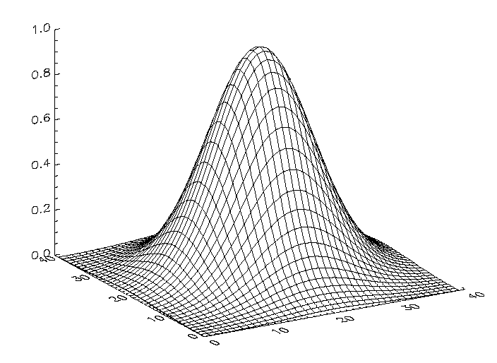
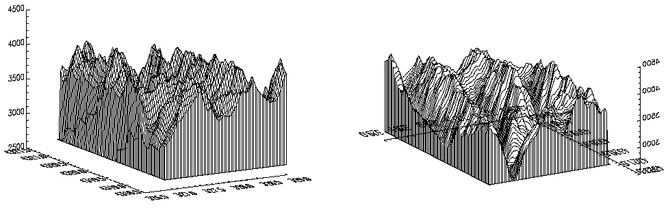
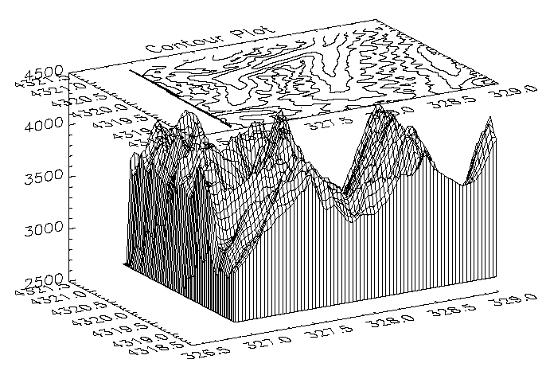

Note: Please see the SURFACE function, which replicates the functionality of this routine and offers an interactive interface.
The SURFACE procedure draws a wire-mesh representation of a two-dimensional array projected into two dimensions, with hidden lines removed. SURFACE accepts a two-dimensional array of z (elevation) values, and optionally x and y parameters indicating the location of each z element. SURFACE depicts the surface created by interpreting each element value as an elevation. These three-dimensional, wire-mesh surface plots can have almost any rotation about the x - and z -axes (the data z -axis must project parallel to the device’s y -axis).
SURFACE projects the three-dimensional array of points into two dimensions after rotating about the z - and then the x -axes. Each point is connected to its neighbors by lines. Hidden lines are suppressed. The rotation about the x - and z -axes can be specified with keywords or a complete three-dimensional transformation matrix can be stored in the field !P.T for use by SURFACE.
If the (X, Y) grid is not regular or nearly regular, errors in hidden line removal occur. The TRIGRID and TRIANGULATE routines can be used to interpolate irregularly-gridded data points to a regular grid before plotting.
If the T3D keyword is set, the 3-D to 2-D transformation matrix contained in !P.T must project the Z axis to a line parallel to the device Y axis, or errors will occur.
The surface lines may blend together when drawing large arrays, especially on low or medium resolution displays. Use the REBIN or CONGRID procedure to resample the array to a lower resolution before plotting.
SURFACE, Z [, X , Y ] [, AX = degrees ] [, AZ = degrees ] [, BOTTOM = index ] [, / HORIZONTAL ] [, / LEGO ] [, / LOWER_ONLY | , / UPPER_ONLY ] [, MAX_VALUE = value ] [, MIN_VALUE = value ] [, / SAVE ] [, SHADES = array ] [, SKIRT = value ] [, / XLOG ] [, / YLOG ] [, ZAXIS ={1 | 2 | 3 | 4}] [, / ZLOG ]
Graphics Keywords: Accepts all graphics keywords accepted by PLOT except for: PSYM, SYMSIZE. See Graphics Keywords Accepted .
Note: Many of the graphic keyword parameters correspond directly to fields in the system variables !P, !X, !Y, or !Z. When specifying a keyword parameter name and value in a call that value affects only the current call, the corresponding system-variable field is not changed. Changing the value of a system-variable field changes the default for that particular parameter and remains in effect until explicitly changed. .
The two-dimensional array to be displayed. If X and Y are provided, the surface is plotted as a function of the ( X , Y ) locations specified by their contents. Otherwise, the surface is generated as a function of the array index of each element of Z .
This argument is converted to double-precision floating-point before plotting. Plots created with SURFACE are limited to the range and precision of double-precision floating-point values.
A vector or two-dimensional array specifying the X coordinates of the grid. If this argument is a vector, each element of X specifies the X coordinate for a column of Z (e.g., X[0] specifies the X coordinate for Z[0,*] ). If X is a two-dimensional array, each element of X specifies the X coordinate of the corresponding point in Z ( X ij specifies the X coordinate for Z ij ).
This argument is converted to double-precision floating-point before plotting.
A vector or two-dimensional array specifying the Y coordinates of the grid. If this argument is a vector, each element of Y specifies the Y coordinate for a row of Z (e.g., Y[0] specifies the Y coordinate for Z[*,0] ). If Y is a two-dimensional array, each element of Y specifies the Y coordinate of the corresponding point in Z ( Y ij specifies the Y coordinate for Z ij ).
This argument is converted to double-precision floating-point before plotting.
This keyword specifies the angle of rotation, about the X axis, in degrees towards the viewer. This keyword is effective only if !P.T3D is not set. If !P.T3D is set, the three-dimensional to two-dimensional transformation used by SURFACE is taken from the 4 by 4 array !P.T.
The surface represented by the two-dimensional array is first rotated, AZ (see below) degrees about the Z axis, then by AX degrees about the X axis, tilting the surface towards the viewer (AX > 0), or away from the viewer.
The AX and AZ keyword parameters default to +30 degrees if omitted and !P.T3D is 0.
The three-dimensional to two-dimensional transformation represented by AX and AZ, can be saved in !P.T by including the SAVE keyword.
This keyword specifies the counterclockwise angle of rotation about the Z axis. This keyword is effective only if !P.T3D is not set. The order of rotation is AZ first, then AX.
The color index used to draw the bottom surface. If not specified, the bottom is drawn with the same color as the top.
A keyword flag which if set causes SURFACE to only draw lines across the plot perpendicular to the line of sight. The default is for SURFACE to draw both across the plot and from front to back.
Set this keyword to produce stacked histogram-style plots. Each data value is rendered as a box covering the XY extent of the cell and with a height proportional to the Z value.
If the X and Y arguments are specified, only N x -1 columns and N y -1 rows are drawn. (This means that the last row and column of array data are not displayed.) The rectangular area covered by Z [ i , j ] is given by X [ i ], X [ i +1], Y [ j ], and Y [ j +1].
Set this keyword to draw only the lower surface of the object. By default, both surfaces are drawn.
The maximum value to be plotted. If this keyword is present, data values greater than the value of MAX_VALUE are treated as missing and are not plotted. Note that the IEEE floating-point value NaN is also treated as missing data.
The minimum value to be plotted. If this keyword is present, data values less than the value of MIN_VALUE are treated as missing and are not plotted. Note that the IEEE floating-point value NaN is also treated as missing data.
Set this keyword to save the 3-D to 2-D transformation matrix established by SURFACE in the system variable field !P.T. Use this keyword when combining the output of SURFACE with additional output from other routines in the same plot.
When used with AXIS, the SAVE keyword parameter saves the scaling parameters established by the call in the appropriate axis system variable, !X, !Y, or !Z. This causes subsequent overplots to be scaled to the new axis.
For example, to display a two-dimensional array using SURFACE, and to then superimpose contours over the surface (this example assumes that !P.T3D is zero, its default value.), enter the following commands:
; Make a surface plot and save the transformation:
SURFACE, Z, /SAVE
; Make contours, don’t erase, use the 3-D to 2-D transform placed
; in !P.T by SURFACE:
CONTOUR, Z, /NOERASE, /T3D
To display a surface and to then display a flat contour plot, registered above the surface:
; Make the surface, save transform:
SURFACE, Z, /SAVE
; Now display a flat contour plot, at the maximum Z value
; (normalized coordinates):
CONTOUR, Z, /NOERASE, /T3D, ZVALUE=1.0
You can display the contour plot below the surface with by using a ZVALUE of 0.0.
This keyword allows user-specified coloring of the mesh surfaces. Set this keyword to an array that specifies the color index of the lines emanating from each data point toward the top and right.
Note: When using the SHADES keyword on True Color devices, we recommend that decomposed color support be turned off, by setting DEVICE, DECOMPOSED=0 . See DEVICE Procedure and DECOMPOSED .
This keyword represents a Z-value at which to draw a skirt around the array. The Z value is expressed in data units. The default is no skirt.
If the skirt is drawn, each point on the four edges of the surface is connected to a point on the skirt which has the given Z value, and the same X and Y values as the edge point. In addition, each point on the skirt is connected to its neighbor.
Set this keyword to draw only the upper surface of the object. By default, both surfaces are drawn.
Set this keyword to specify a logarithmic X axis.
Set this keyword to specify a logarithmic Y axis.
This keyword specifies the placement of the Z axis for the SURFACE plot.
By default, SURFACE draws the Z axis at the upper left corner of the axis box. To suppress the Z axis, use ZAXIS=-1 in the call. The position of the Z axis is determined from the value of ZAXIS as follows: 1 = lower right, 2 = lower left, 3 = upper left, and 4 = upper right.
Set this keyword to specify a logarithmic Z axis.
See Direct Graphics Keywords for the description of the following graphics and plotting keywords:
BACKGROUND , CHARSIZE , CHARTHICK , CLIP , COLOR , DATA , DEVICE , FONT , LINESTYLE , NOCLIP , NODATA , NOERASE , NORMAL , POSITION , SUBTITLE , T3D , THICK , TICKLEN , TITLE , [XYZ]CHARSIZE , [XYZ]GRIDSTYLE , [XYZ]MARGIN , [XYZ]MINOR , [XYZ]RANGE , [XYZ]STYLE , [XYZ]THICK , [XYZ]TICKFORMAT , [XYZ]TICKINTERVAL , [XYZ]TICKLAYOUT , [XYZ]TICKLEN , [XYZ]TICKNAME , [XYZ]TICKS , [XYZ]TICKUNITS , [XYZ]TICKV , [XYZ]TICK_GET , [XYZ]TITLE , ZVALUE
The following IDL code illustrates the most basic call to SURFACE. ; Create a 40 by 40 array in which each element is
; equal to the Euclidean distance from the center:
Z = SHIFT(DIST(40), 20, 20)
; Make Gaussian with a 1/e width of 10:
Z = EXP(-(Z/10)^2)
; Call SURFACE to display plot:
SURFACE, Z
In the example above, the DIST function creates an ( n , n ) array in which each element is set to its Euclidean distance from the origin. It produces a two-dimensional Gaussian function, then calls SURFACE to produce the figure below.
|
 |
Another simple example is created with the following statements:
; Create a simple dataset to display:
D = DIST(30)
; Plot a simple wire-mesh surface representation of D:
SURFACE, D
; Create a wire-mesh plot of D with a title and a "skirt" around
; the edges of the dataset at Z=0:
SURFACE, D, SKIRT=0.0, TITLE = 'Surface Plot', CHARSIZE = 2
The figures below illustrate the application of the SURFACE procedure to the Maroon Bells elevation data. As with CONTOUR, it is often useful to reduce the number of individual data values, so that the surface is not obscured by excessive detail.
|
 |
The left illustration in the figure above was produced by the following statements:
; Restore variables.
@cntour01
; Resize the original data into a 72 x 92 array, setting
; all data values which are less than 2650 (the lowest
; elevation we wish to show) to 2650.
surf = REBIN(elev > 2650, 350/5, 450/5)
; Display the surface, drawing a skirt down to 2650 meters:
SURFACE, surf, X, Y, SKIRT = 2650
Example Code:
Alternatively, run the batch file
surf01
with the following command at the IDL prompt:
@surf01
The right illustration in the figure shows the Maroon Peaks area looking from the back row to the front row (north to the south) of the Maroon Peaks area. This perspective on the data is created by setting the angle of rotation around the z -axis to 210 degrees (setting AZ = 210), and increasing the azimuth from the default 30 degrees to 45 (setting AX = 45). Also, only the horizontal lines are drawn because the /HORIZONTAL keyword is present in the following call:
SURFACE, surf, X, Y, SKIRT = 2650, /HORIZ, AZ = 210, AX = 45
Because the axes are rotated 210 degrees about the original z -axis, the annotation is reversed and the x -axis is behind and obscured by the surface. This undesirable effect can be eliminated by reversing the minimum and maximum values of the X and Y ranges used when drawing the surface:
; As above, but reverse the data rather than the axes:
SURFACE, surf, X, Y, SKIRT = 2650, /HORIZONTAL, AX = 45, $
YRANGE = [MAX(Y), MIN(Y)], XRANGE=[MAX(X), MIN(X)]
The SURFACE procedure creates a transformation matrix from its keyword parameters AX and AZ as follows:
| 1. | Starting with the identity transformation, SURFACE translates the center of the normalized cube to the origin. |
| 2. | SURFACE rotates 90 degrees about the x -axis to make the + z -axis of the data the + y axis of the display. The + y data axis extends from the front of the display to the rear. |
| 3. | SURFACE rotates AZ degrees about the y -axis. This rotates the result counter-clockwise, as seen from above the page. |
| 4. | SURFACE rotates AX degrees about the x -axis, tilting the data towards the viewer. |
| 5. | The procedure then removes the translation applied in the first step and scales the data so that the data are still contained within the normal coordinate unit cube after transformation. |
These transformations can be created using T3D Procedure as shown below. The SCALE3 Procedure mimics the transformation matrix created by SURFACE using the following method:
; Translate to move center of cube to origin.
T3D, /RESET, TRANSLATE = [-.5, -.5, -.5]
; Rotate 90 degrees about x-axis, so +z axis is now +y.
; Then rotate AZ degrees about y-axis.
T3D, ROTATE = [-90, AZ, 0]
; Rotate AX about x axis:
T3D, ROTATE = [AX, 0, 0]
; Restore origin.
T3D, TRANSLATE = [0.5, 0.5, 0.5]
The SCALE3 procedure, scales the unit cube by a fixed factor, 1/SQRT(3) to ensure that the corners of the rotated cube fit within the drawing area. If requested, it also will set the data scaling. Animations involving rotations or the SURFACE procedure should have their scaling and viewing transformation set by SCALE3 rather than the obsolete SURFR procedure, so that the scaling does not vary between frames.
It is easy to combine the results of SURFACE with the other IDL graphics procedures. The keyword parameter SAVE causes SURFACE to save the graphic transformation it used in !P.T. Then, when either CONTOUR or PLOT is called with the keyword parameter T3D, its output is transformed with the same projection. For example, the figure below illustrates how SURFACE and CONTOUR can be combined. In essence, this is a combination of figures from 2 previous sections.
|
 |
Using the same variables as in the earlier sections of this section, the figure was produced with the following statements:
; Restore variables.
@cntour01
; Resize the original data into a 72 x 92 array,
; setting all data values which are less than
; 2650 (the lowest elevation we wish to show) to 2650.
surf = REBIN(elev > 2650, 360/5, 460/5)
; Make the mesh.
SURFACE, surf, X, Y, SKIRT=2650, /SAVE
; Specify T3D to align with SURFACE, at ZVALUE of 1.0.
; Suppress clipping as the plot is outside the normal plot window.
CONTOUR, surf, X, Y, /T3D, /NOERASE, TITLE = 'Contour Plot', $
MAX_VAL = 5000., ZVALUE = 1.0, /NOCLIP, $
LEVELS = 2750. + FINDGEN(6) * 250
|
Original |
Introduced |